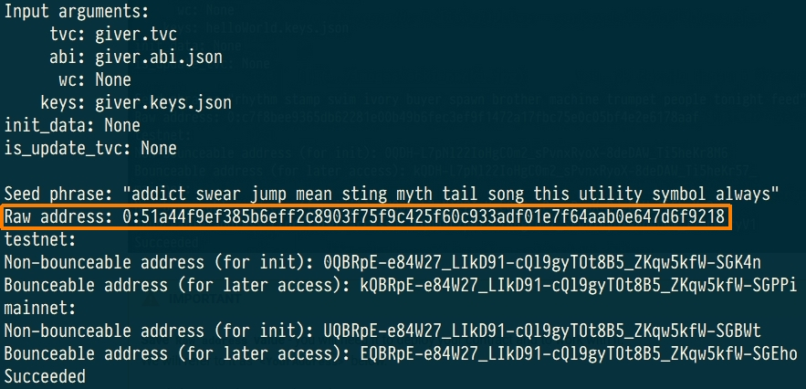
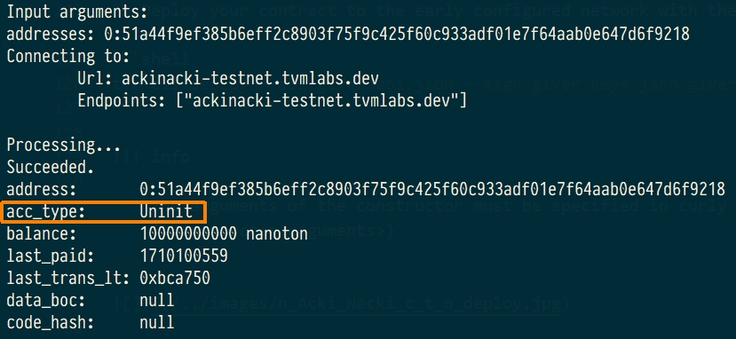
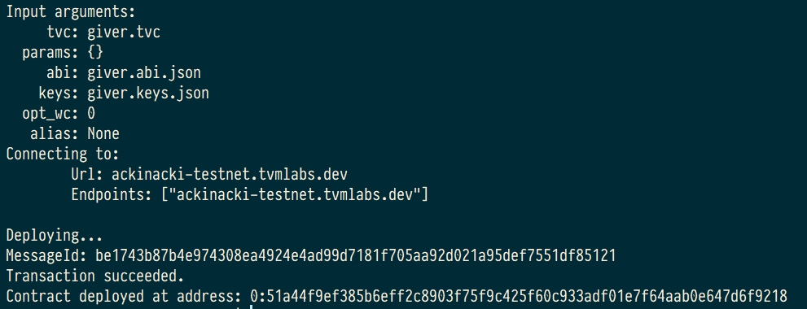
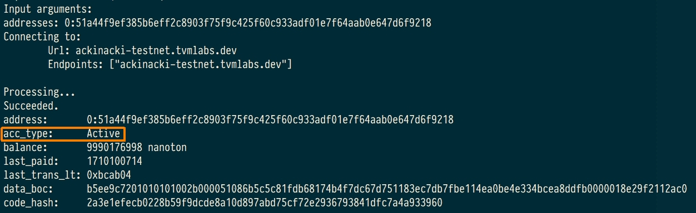

Create giver
Create wallet-contract
To create your own giver, using any contract of wallet.
For example, create file giver.sol with following content:
pragma ton-solidity >= 0.35.0;
/// @title Simple wallet
/// @author Tonlabs
contract Wallet {
// Modifier that allows function to accept external call only if it was signed
// with contract owner's public key.
modifier checkOwnerAndAccept {
// Check that inbound message was signed with owner's public key.
// Runtime function that obtains sender's public key.
require(msg.pubkey() == tvm.pubkey(), 100);
// Runtime function that allows contract to process inbound messages spending
// its own resources (it's necessary if contract should process all inbound messages,
// not only those that carry value with them).
tvm.accept();
_;
}
/*
* Public functions
*/
/// @dev Contract constructor.
constructor() checkOwnerAndAccept { }
/// @dev Allows to transfer grams to the destination account.
/// @param dest Transfer target address.
/// @param value Nanograms value to transfer.
/// @param bounce Flag that enables bounce message in case of target contract error.
function sendTransaction(address dest, uint128 value, bool bounce) public view checkOwnerAndAccept {
// Runtime function that allows to make a transfer with arbitrary settings.
dest.transfer(value, bounce, 3);
}
// Function to receive plain transfers.
receive() external {
}
}
Compiling
Compile this contract using the following instruction
As a result, you will have 4 files:
giver.sol- source code of your wallet-contract;giver.code- it contains the assembly code of the contract;giver.tvc- binary code of your contract (the contents of this file will be deployed on network);giver.abi.json- describe the interface of the contract.
Deploy
Let's deploy the contract to Acki Nacki development blockchain
at ackinacki-testnet.tvmlabs.dev
1) Make sure TVM-CLI is in $PATH:
2) Generate address, keys and seed phrase for your giver:
Address of your contract in the blockchain is located after Raw address:

IMPORTANT
Save Raw address value - you will need it to deploy your contract and to work with it.
We will refer to it as <YourAddress> below.
Seed phrase is also printed to stdout.
Key pair will be generated and saved to the file giver.keys.json.
Danger
Write your seed phrase down and store it somewhere safe, and never share it with anyone. Avoid storing it in plain text or screenshots, or any other non-secure way. If you lose it, you lose access to your assets. Anyone who gets it, gets full access to your assets.
Also, save the file with a pair of keys in a safe place.
3) Request test tokens
Note
Acki Nacki deploy is fee-based, so your new contract will be charged for this.
You will need to request some tokens to the address before the actual deployment.
Contracts take value in nanotokens.
(You will need approximately 10 tokens to deploy)
Please contact us in Channel on Telegram and specify the <YourAddress>.
4) Check the state of the pre-deployed contract. It should be Uninit:
You will see something similar to the following:

5) Deploy your contract to the early configured network with the following command:
Info
The arguments of the constructor must be specified in curly brackets:
{<constructor arguments>}

6) Check the contract state again. This time, it is should be Active.

Request test tokens for future use
To replenish your giver, please contact us in Channel on Telegram.
Source code
You can find full source code of this contract and its artifacts here